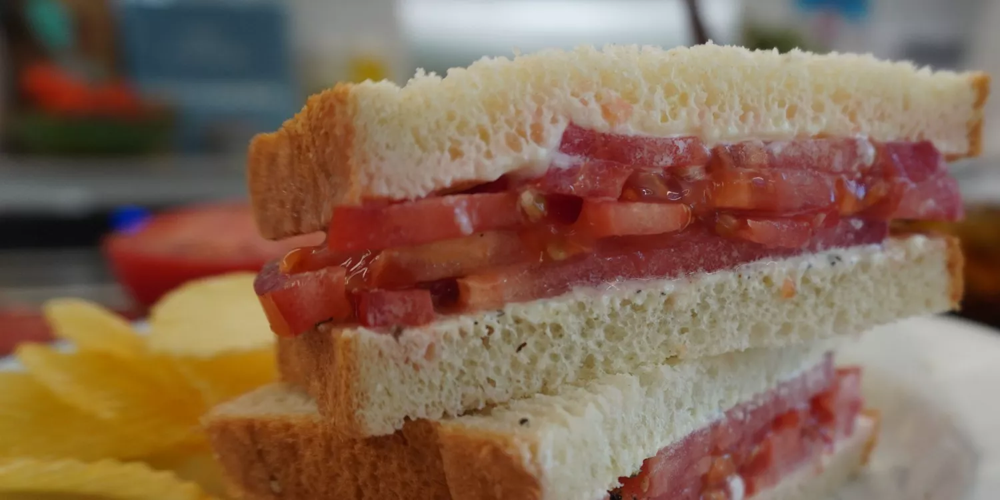

Sandwich

Description
Tastes like summer! Room temperature tomatoes are key here and once the
salt and pepper hit them, the juices start flowing. When the juicy
tomatoes blend in with the mayonnaise, it makes a delicious, creamy,
slightly tangy, and flavorful sauce. The bread becomes slightly soggy, in
the best way possible. The last bite is even better than the first!
Ingredients
- Mayonnaise
- Bread
- tomato
- Salt and pepper
Steps:
- Slice: You want even slices that aren't too thick or too thin. Use your best judgment.
- pread: Use a butter knife to spread mayonnaise onto both slices of bread. You probably won't need more than a tablespoon.
- Spread: Use a butter knife to spread mayonnaise onto both slices of bread. You probably won't need more than a tablespoon.
- Assemble: Sandwich the tomatoes (in two layers) between the slices of bread. Make sure to liberally season the tomatoes between each layer for maximum flavor.